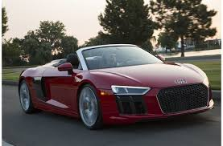
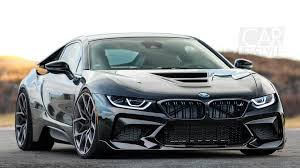
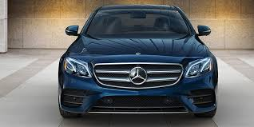

AUDI

Audi AG (German: [ˈaʊ̯di ʔaːˈɡeː] (About this soundlisten)) is a German automobile manufacturer that designs, engineers, produces, markets and distributes luxury vehicles. Audi is a member of the Volkswagen Group and has its roots at Ingolstadt, Bavaria, Germany. Audi-branded vehicles are produced in nine production facilities worldwide.
The origins of the company are complex, going back to the early 20th century and the initial enterprises (Horch and the Audiwerke) founded by engineer August Horch; and two other manufacturers (DKW and Wanderer), leading to the foundation of Auto Union in 1932. The modern era of Audi essentially began in the 1960s when Auto Union was acquired by Volkswagen from Daimler-Benz.[10] After relaunching the Audi brand with the 1965introduction of the Audi F103 series, Volkswagen merged Auto Union with NSU Motorenwerke in 1969, thus creating the present day form of the company.
The company name is based on the Latin translation of the surname of the founder, August Horch. "Horch", meaning "listen" in German, becomes "audi" in Latin. The four rings of the Audi logo each represent one of four car companies that banded together to create Audi's predecessor company, Auto Union
BMW

Bayerische Motoren Werke AG, commonly referred to as BMW (German pronunciation: [ˈbeːˈʔɛmˈveː] (About this soundlisten)), is a German multinational company which produces automobiles and motorcycles. The company was founded in 1916 as a manufacturer of aircraft engines, which it produced from 1917 until 1918 and again from 1933 to 1945.Bayerische Motoren Werke AG, commonly referred to as BMW (German pronunciation: [ˈbeːˈʔɛmˈveː] (About this soundlisten)), is a German multinational company which produces automobiles and motorcycles. The company was founded in 1916 as a manufacturer of aircraft engines, which it produced from 1917 until 1918 and again from 1933 to 1945.
Automobiles are marketed under the brands BMW, Mini and Rolls-Royce, and motorcycles are marketed under the brand BMW Motorrad. In 2015, BMW was the world's twelfth-largest producer of motor vehicles, with 2,279,503 vehicles produced.Automobiles are marketed under the brands BMW, Mini and Rolls-Royce, and motorcycles are marketed under the brand BMW Motorrad. In 2015, BMW was the world's twelfth-largest producer of motor vehicles, with 2,279,503 vehicles produced
BMW is headquartered in Munich and produces motor vehicles in Germany, Brazil, China, India, South Africa, the United Kingdom, the United States and Mexico. BMW has significant motorsport history, especially in touring cars, Formula 1, sports cars and the Isle of Man TT.BMW is headquartered in Munich and produces motor vehicles in Germany, Brazil, China, India, South Africa, the United Kingdom, the United States and Mexico.
MERCEDES

Mercedes-Benz (German: [mɛɐ̯ˈtseːdəsˌbɛnts, -dɛs-])[2][3] is a German global automobile marque and a division of Daimler AG. Mercedes-Benz is known for luxury vehicles, buses, coaches, ambulances and trucks. The headquarters is in Stuttgart, Baden-Württemberg. The name first appeared in 1926 under Daimler-Benz. In 2018, Mercedes-Benz was the biggest selling premium vehicle brand in the world, having sold 2.31 million passenger cars.
Mercedes-Benz traces its origins to Daimler-Motoren-Gesellschaft's 1901 Mercedes and Karl Benz's 1886 Benz Patent-Motorwagen, which is widely regarded as the first gasoline-powered automobile. The slogan for the brand is "the best or nothing".
Mercedes-Benz traces its origins to Karl Benz's creation of the first petrol-powered car, the Benz Patent Motorwagen, financed by Bertha Benz[6] and patented in January 1886,[7] and Gottlieb Daimler and engineer Wilhelm Maybach's conversion of a stagecoach by the addition of a petrol engine later that year. The Mercedes automobile was first marketed in 1901 by Daimler-Motoren-Gesellschaft (Daimler Motors Corporation).
Since its inception, Mercedes-Benz has maintained a reputation for its quality and durability. Objective measures looking at passenger vehicles, such as J. D. Power surveys, demonstrated a downturn in reputation in these criteria in the late 1990s and early 2000s.